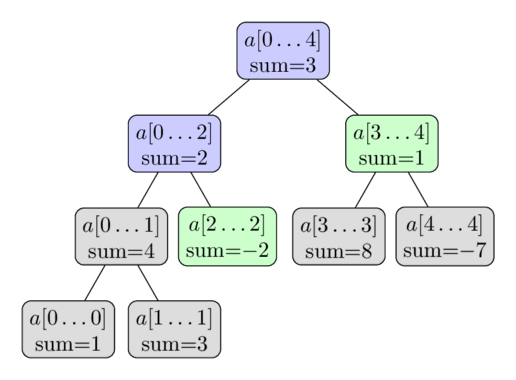

Cây phân đoạn (Segment Tree)¶
Cây phân đoạn (Segment Tree) là một cấu trúc dữ liệu lưu trữ thông tin về các khoảng (đoạn) của một mảng dưới dạng một cây. Cấu trúc dữ liệu này cho phép trả lời các truy vấn trên đoạn (range queries) hiệu quả, trong khi vẫn đủ linh hoạt để hỗ trợ các thao tác cập nhật (sửa đổi) trên mảng nhanh chóng. Thao tác này bao gồm việc tìm tổng của các phần tử liên tiếp trong mảng $a[l \dots r]$, hoặc tìm phần tử nhỏ nhất trong đoạn đó trong thời gian $O(\log n)$. Giữa các câu trả lời truy vấn, Segment Tree cho phép sửa đổi mảng bằng cách thay thế một phần tử, hoặc thậm chí thay đổi giá trị của cả một đoạn con (ví dụ: gán tất cả các phần tử $a[l \dots r]$ bằng một giá trị, hoặc cộng một lượng vào tất cả các phần tử trong đoạn con đó).
Nhìn chung, Segment Tree là một cấu trúc dữ liệu rất linh hoạt và có một lượng lớn bài toán có thể được giải quyết bằng cấu trúc dữ liệu này. Ngoài ra, nó cũng có thể được áp dụng cho các thao tác phức tạp hơn và trả lời các truy vấn nâng cao hơn (xem Các phiên bản nâng cao của Cây phân đoạn). Đặc biệt, Segment Tree có thể dễ dàng tổng quát hóa cho các không gian nhiều chiều hơn. Ví dụ, với một Segment Tree hai chiều, bạn có thể trả lời các truy vấn tổng hoặc cực tiểu trên một hình chữ nhật con của một ma trận cho trước trong thời gian chỉ $O(\log^2 n)$.
Một tính chất quan trọng của Segment Tree là chúng chỉ yêu cầu lượng bộ nhớ tuyến tính. Segment Tree tiêu chuẩn yêu cầu tối đa $4n$ nút để làm việc trên một mảng có kích thước $n$.
Dạng đơn giản nhất của Cây phân đoạn¶
Để bắt đầu một cách dễ dàng, chúng ta hãy xem xét dạng đơn giản nhất của Segment Tree. Chúng ta muốn trả lời các truy vấn tính tổng một cách hiệu quả. Bài toán cụ thể là: Cho một mảng $a[0 \dots n-1]$, Segment Tree phải có thể tìm tổng các phần tử giữa hai chỉ số $l$ và $r$ (tức là tính tổng $\sum_{i=l}^r a[i]$), đồng thời xử lý thao tác thay đổi giá trị của các phần tử trong mảng (tức là thực hiện các phép gán có dạng $a[i] = x$). Segment Tree cần xử lý cả hai truy vấn trên trong thời gian $O(\log n)$.
Đây là một sự cải tiến vượt bậc so với các phương pháp đơn giản hơn. Cài đặt mảng thông thường chỉ có thể cập nhật phần tử trong $O(1)$, nhưng mất $O(n)$ để tính tổng đoạn. Còn mảng cộng dồn (prefix sum) được tính toán trước có thể tính tổng đoạn trong $O(1)$, nhưng việc cập nhật một phần tử mảng đòi hỏi phải cập nhật lại mảng cộng dồn mất $O(n)$.
Cấu trúc của Cây phân đoạn¶
Chúng ta có thể sử dụng phương pháp chia để trị đối với các đoạn của mảng. Chúng ta tính toán và lưu trữ tổng của các phần tử của toàn bộ mảng, tức là tổng của đoạn $a[0 \dots n-1]$. Sau đó, chia mảng thành hai nửa $a[0 \dots (n-1)/2]$ và $a[(n+1)/2 \dots n-1]$, tính toán và lưu trữ tổng của từng nửa đó. Đến lượt mình, mỗi nửa trong số hai nửa này lại được chia đôi, và cứ tiếp tục như vậy cho đến khi các đoạn đạt đến kích thước $1$.
Chúng ta có thể xem các đoạn này tạo thành một cây nhị phân: gốc của cây này là đoạn $a[0 \dots n-1]$, và mỗi nút (ngoại trừ các lá) có đúng hai nút con. Đó là lý do tại sao cấu trúc dữ liệu này được gọi là "Cây phân đoạn" (Segment Tree), mặc dù trong hầu hết các cách cài đặt, cây không được xây dựng một cách tường minh thông qua các con trỏ (xem Cài đặt).
Dưới đây là hình ảnh minh họa cho một Segment Tree quản lý mảng $a = [1, 3, -2, 8, -7]$:

Từ mô tả ngắn gọn này, chúng ta có thể kết luận rằng một Segment Tree chỉ yêu cầu số lượng nút tuyến tính. Tầng đầu tiên của cây chứa một nút duy nhất (gốc), tầng thứ hai chứa hai nút, tầng thứ ba chứa bốn nút, cho đến khi số lượng nút đạt tới $n$. Do đó, số lượng nút trong trường hợp xấu nhất có thể được ước lượng bằng tổng $1 + 2 + 4 + \dots + 2^{\lceil\log_2 n\rceil} \lt 2^{\lceil\log_2 n\rceil + 1} \lt 4n$.
Cần lưu ý rằng bất cứ khi nào $n$ không phải là một lũy thừa của hai, không phải tất cả các tầng của Segment Tree đều được lấp đầy hoàn toàn. Chúng ta có thể thấy hiện tượng này trong hình minh họa ở trên. Hiện tại chúng ta có thể tạm thời bỏ qua chi tiết này, nhưng nó sẽ trở nên quan trọng sau này khi tiến hành cài đặt.
Chiều cao của Segment Tree là $O(\log n)$, bởi vì khi đi xuống từ gốc tới các lá, kích thước của các đoạn giảm đi khoảng một nửa sau mỗi bước.
Xây dựng¶
Trước khi xây dựng cây phân đoạn, chúng ta cần quyết định:
- Giá trị được lưu trữ tại mỗi nút của cây phân đoạn. Ví dụ, trong cây phân đoạn tính tổng, một nút sẽ lưu trữ tổng của các phần tử trong phạm vi $[l, r]$ của nó.
- Phép toán hợp nhất (merge) gộp hai nút con trong cây phân đoạn. Ví dụ, trong cây phân đoạn tính tổng, hai nút tương ứng với các khoảng $a[l_1 \dots r_1]$ và $a[l_2 \dots r_2]$ sẽ được hợp nhất thành một nút tương ứng với khoảng $a[l_1 \dots r_2]$ bằng cách cộng giá trị của hai nút con đó.
Lưu ý rằng một nút là "nút lá" nếu đoạn tương ứng của nó chỉ chứa một phần tử duy nhất trong mảng ban đầu. Nó nằm ở tầng thấp nhất của cây phân đoạn. Giá trị của nó bằng chính phần tử mảng tương ứng $a[i]$.
Để xây dựng cây phân đoạn, chúng ta bắt đầu từ tầng dưới cùng (các nút lá) và gán cho chúng các giá trị tương ứng. Dựa trên các giá trị này, chúng ta có thể tính toán giá trị của tầng trước đó bằng hàm merge.
Và dựa trên các giá trị đó, chúng ta tính toán giá trị của tầng trước nữa, lặp lại quy trình cho đến khi đạt tới nút gốc.
Cách mô tả thao tác này một cách đệ quy theo hướng ngược lại là rất thuận tiện, tức là từ nút gốc đi xuống các nút lá. Hàm xây dựng, nếu được gọi tại một nút không phải lá, sẽ thực hiện các việc sau:
- Gọi đệ quy xây dựng các giá trị của hai nút con.
- Hợp nhất các giá trị vừa tính của hai con đó vào nút cha.
Chúng ta bắt đầu quá trình xây dựng từ nút gốc, từ đó tính toán được toàn bộ cây phân đoạn.
Độ phức tạp thời gian của quá trình xây dựng này là $O(n)$, với giả định rằng phép toán hợp nhất tốn thời gian hằng số (phép hợp nhất được gọi $n$ lần, bằng số lượng nút bên trong của cây phân đoạn).
Truy vấn tổng¶
Bây giờ chúng ta sẽ trả lời các truy vấn tính tổng. Đầu vào là hai số nguyên $l$ và $r$, và chúng ta phải tính tổng của đoạn $a[l \dots r]$ trong thời gian $O(\log n)$.
Để làm điều này, chúng ta sẽ duyệt qua Segment Tree và sử dụng các tổng đã được tính toán trước của các đoạn. Giả sử chúng ta đang ở nút quản lý đoạn $a[tl \dots tr]$. Có ba trường hợp có thể xảy ra.
Trường hợp dễ nhất là khi đoạn truy vấn $a[l \dots r]$ trùng khớp hoàn toàn với đoạn tương ứng của nút hiện tại (tức là $a[l \dots r] = a[tl \dots tr]$). Khi đó, chúng ta dừng lại và trả về tổng đã được tính trước lưu trữ tại nút này.
Trường hợp thứ hai là đoạn truy vấn nằm hoàn toàn trong phạm vi quản lý của con bên trái hoặc con bên phải. Nhớ rằng con bên trái quản lý đoạn $a[tl \dots tm]$ và con bên phải quản lý đoạn $a[tm + 1 \dots tr]$ với $tm = (tl + tr) / 2$. Trong trường hợp này, chúng ta chỉ cần đi xuống nút con tương ứng phủ đoạn truy vấn, và thực hiện thuật toán đệ quy tại nút đó.
Trường hợp cuối cùng là đoạn truy vấn giao với cả hai con. Trong trường hợp này, chúng ta không có lựa chọn nào khác ngoài việc thực hiện hai lời gọi đệ quy cho cả hai con. Đầu tiên, chúng ta đi xuống con bên trái, tính toán kết quả một phần (tức là tổng các phần tử thuộc phần giao giữa đoạn truy vấn và đoạn quản lý của con bên trái), sau đó đi xuống con bên phải, tính toán kết quả một phần tương ứng, rồi kết hợp hai kết quả bằng phép cộng. Nói cách khác, vì con bên trái đại diện cho đoạn $a[tl \dots tm]$ và con bên phải đại diện cho đoạn $a[tm+1 \dots tr]$, chúng ta tính truy vấn tổng $a[l \dots tm]$ bằng con bên trái, và truy vấn tổng $a[tm+1 \dots r]$ bằng con bên phải.
Như vậy, quá trình xử lý truy vấn tổng là một hàm tự gọi đệ quy chính nó một lần với con trái hoặc con phải (không thay đổi biên truy vấn), hoặc gọi hai lần với cả hai con (bằng cách chia truy vấn thành hai truy vấn con). Và đệ quy kết thúc bất cứ khi nào biên của đoạn truy vấn hiện tại trùng khớp hoàn toàn với biên đoạn quản lý của nút hiện tại. Khi đó, câu trả lời sẽ là giá trị tổng được tính trước lưu trữ trong cây.
Nói cách khác, việc tính toán truy vấn là một quá trình duyệt cây, lan truyền qua tất cả các nhánh cần thiết của cây và sử dụng các giá trị tổng đã tính trước của các đoạn.
Chúng ta bắt đầu quá trình duyệt từ nút gốc của Segment Tree.
Quá trình này được minh họa trong hình dưới đây. Mảng $a = [1, 3, -2, 8, -7]$ được sử dụng, và ở đây chúng ta muốn tính tổng $\sum_{i=2}^4 a[i]$. Các nút được tô màu sẽ được truy cập, và chúng ta sẽ sử dụng các giá trị tính sẵn của các nút màu xanh lá cây. Kết quả trả về là $-2 + 1 = -1$.

Tại sao độ phức tạp của thuật toán này lại là $O(\log n)$? Để chứng minh điều này, chúng ta xem xét từng tầng của cây. Hóa ra, tại mỗi tầng, chúng ta truy cập không quá bốn nút. Và vì chiều cao của cây là $O(\log n)$, chúng ta có được thời gian chạy mong muốn.
Chúng ta có thể chứng minh khẳng định này (truy cập tối đa bốn nút ở mỗi tầng) bằng phương pháp quy nạp. Tại tầng đầu tiên, chúng ta chỉ truy cập một nút duy nhất là gốc, vì vậy số lượng nút truy cập ít hơn bốn. Xét một tầng bất kỳ. Theo giả thiết quy nạp, chúng ta truy cập tối đa bốn nút ở tầng hiện tại. Nếu chúng ta chỉ truy cập tối đa hai nút, tầng tiếp theo sẽ có tối đa bốn nút (điều này hiển nhiên vì mỗi nút chỉ tạo ra tối đa hai lời gọi đệ quy). Do đó, giả sử chúng ta truy cập ba hoặc bốn nút ở tầng hiện tại. Trong số các nút này, chúng ta sẽ phân tích kỹ hơn các nút ở giữa. Vì truy vấn yêu cầu tổng của một mảng con liên tục, chúng ta biết rằng các đoạn tương ứng với các nút ở giữa đã truy cập sẽ nằm hoàn toàn trong đoạn truy vấn. Do đó, các nút ở giữa này sẽ không thực hiện thêm bất kỳ lời gọi đệ quy nào xuống tầng dưới. Vì vậy, chỉ có nút ngoài cùng bên trái và ngoài cùng bên phải mới có khả năng thực hiện các lời gọi đệ quy tiếp. Các cuộc gọi từ hai nút biên này sẽ tạo ra tối đa bốn cuộc gọi đệ quy mới, do đó tầng tiếp theo cũng thỏa mãn khẳng định. Chúng ta có thể hiểu là một nhánh đi xuống tiếp cận biên trái của truy vấn, và nhánh còn lại tiếp cận biên phải của truy vấn.
Do đó, tổng cộng chúng ta truy cập tối đa $4 \log n$ nút, tương đương với thời gian chạy $O(\log n)$.
Tóm lại, truy vấn hoạt động bằng cách chia đoạn đầu vào thành nhiều đoạn con mà tổng của chúng đã được tính trước và lưu trữ trong cây. Và nếu chúng ta dừng phân chia bất cứ khi nào đoạn truy vấn trùng khớp với đoạn quản lý của nút, chúng ta chỉ cần dùng $O(\log n)$ đoạn con như vậy, đem lại tính hiệu quả của Segment Tree.
Truy vấn cập nhật¶
Bây giờ chúng ta muốn sửa đổi một phần tử cụ thể trong mảng, ví dụ thực hiện phép gán $a[i] = x$. Và chúng ta phải cập nhật lại Segment Tree sao cho nó tương ứng với mảng mới sau khi sửa đổi.
Truy vấn này đơn giản hơn truy vấn tính tổng. Mỗi tầng của Segment Tree tạo thành một phân hoạch của mảng. Do đó, một phần tử $a[i]$ chỉ đóng góp vào đúng một đoạn ở mỗi tầng. Vì thế, chỉ có $O(\log n)$ nút cần được cập nhật.
Dễ thấy truy vấn cập nhật có thể được cài đặt bằng một hàm đệ quy. Hàm nhận vào nút hiện tại của cây, tự gọi đệ quy nó với một trong hai nút con (nút chứa $a[i]$ trong đoạn quản lý), và sau đó tính toán lại giá trị tổng của nó, tương tự như cách làm trong hàm build (tổng của hai con).
Dưới đây là minh họa trực quan trên cùng mảng đó. Chúng ta thực hiện cập nhật $a[2] = 3$. Các nút màu xanh lá cây là các nút được truy cập và cập nhật.

Cài đặt¶
Vấn đề chính cần cân nhắc là cách lưu trữ Segment Tree. Tất nhiên, chúng ta có thể định nghĩa một cấu trúc $\text{Vertex}$ và tạo các đối tượng lưu trữ biên của đoạn, tổng của nó và các con trỏ đến các nút con. Tuy nhiên, điều này đòi hỏi phải lưu trữ nhiều thông tin dư thừa dưới dạng các con trỏ. Chúng ta sẽ sử dụng một mẹo đơn giản để tăng hiệu quả bằng cách sử dụng một cấu trúc dữ liệu ẩn: Chỉ lưu trữ các tổng trong một mảng duy nhất. (Một phương pháp tương tự cũng được sử dụng cho heap nhị phân). Tổng của nút gốc nằm ở chỉ số 1, tổng của hai nút con của nó nằm ở chỉ số 2 và 3, tổng của các con của chúng nằm ở các chỉ số từ 4 đến 7, và cứ tiếp tục như vậy. Với việc đánh số bắt đầu từ 1, con bên trái của nút tại chỉ số $i$ sẽ được lưu trữ tại chỉ số $2i$, và con bên phải tại chỉ số $2i + 1$. Tương ứng, cha của nút ở chỉ số $i$ được lưu trữ tại $i/2$ (phép chia nguyên).
Điều này giúp đơn giản hóa việc cài đặt rất nhiều. Chúng ta không cần lưu trữ cấu trúc cây trong bộ nhớ một cách tường minh vì nó được định nghĩa ngầm. Chúng ta chỉ cần một mảng duy nhất chứa tổng của tất cả các đoạn.
Như đã lưu ý trước đó, chúng ta cần lưu trữ tối đa $4n$ nút. Con số thực tế có thể ít hơn, nhưng để thuận tiện, chúng ta luôn cấp phát một mảng có kích thước $4n$. Sẽ có một số phần tử trong mảng tổng không tương ứng với bất kỳ nút nào trong cây thực tế, nhưng điều này không làm ảnh hưởng đến việc cài đặt.
Vì vậy, chúng ta lưu trữ Segment Tree đơn giản dưới dạng một mảng $t[]$ với kích thước gấp bốn lần kích thước đầu vào $n$:
int n, t[4*MAXN];
Quy trình xây dựng Segment Tree từ một mảng $a[]$ cho trước như sau: đây là một hàm đệ quy với các tham số $a[]$ (mảng đầu vào), $v$ (chỉ số của nút hiện tại), và các biên $tl$ và $tr$ của đoạn hiện tại. Trong chương trình chính, hàm này sẽ được gọi với các tham số của nút gốc: $v = 1$, $tl = 0$, và $tr = n - 1$.
void build(int a[], int v, int tl, int tr) {
if (tl == tr) {
t[v] = a[tl];
} else {
int tm = (tl + tr) / 2;
build(a, v*2, tl, tm);
build(a, v*2+1, tm+1, tr);
t[v] = t[v*2] + t[v*2+1];
}
}
Hàm trả lời truy vấn tổng cũng là một hàm đệ quy, nhận vào thông tin về nút/đoạn hiện tại (chỉ số $v$ và các biên $tl$, $tr$) cùng thông tin về các biên của truy vấn $l$ và $r$. Để đơn giản hóa mã nguồn, hàm này luôn thực hiện hai lời gọi đệ quy, ngay cả khi chỉ cần một - trong trường hợp đó, cuộc gọi đệ quy thừa sẽ có $l > r$, và điều này có thể dễ dàng xử lý bằng một kiểm tra bổ sung ở đầu hàm.
int sum(int v, int tl, int tr, int l, int r) {
if (l > r)
return 0;
if (l == tl && r == tr) {
return t[v];
}
int tm = (tl + tr) / 2;
return sum(v*2, tl, tm, l, min(r, tm))
+ sum(v*2+1, tm+1, tr, max(l, tm+1), r);
}
Cuối cùng là truy vấn cập nhật. Hàm này cũng nhận thông tin về nút/đoạn hiện tại, cùng tham số của truy vấn cập nhật (vị trí phần tử và giá trị mới của nó).
void update(int v, int tl, int tr, int pos, int new_val) {
if (tl == tr) {
t[v] = new_val;
} else {
int tm = (tl + tr) / 2;
if (pos <= tm)
update(v*2, tl, tm, pos, new_val);
else
update(v*2+1, tm+1, tr, pos, new_val);
t[v] = t[v*2] + t[v*2+1];
}
}
Cài đặt tiết kiệm bộ nhớ¶
Hầu hết mọi người sử dụng cách cài đặt ở phần trước. Nếu bạn nhìn vào mảng t, bạn có thể thấy rằng nó tuân theo việc đánh số các nút cây theo thứ tự duyệt BFS (duyệt theo tầng).
Với cách duyệt này, các con của nút $v$ lần lượt là $2v$ và $2v + 1$.
Tuy nhiên, nếu $n$ không phải là lũy thừa của hai, phương pháp này sẽ bỏ qua một số chỉ số và để trống một số phần trong mảng t.
Dung lượng bộ nhớ tiêu thụ bị giới hạn bởi $4n$, mặc dù Segment Tree của một mảng gồm $n$ phần tử chỉ thực sự cần $2n - 1$ nút.
Tuy nhiên, lượng bộ nhớ này có thể được giảm bớt. Chúng ta đánh số lại các nút của cây theo thứ tự duyệt Euler tour (tiền thứ tự - pre-order), và viết tất cả các nút này cạnh nhau.
Xét một nút ở chỉ số $v$, quản lý đoạn $[l, r]$, và đặt $mid = \dfrac{l + r}{2}$. Rõ ràng là con bên trái sẽ có chỉ số $v + 1$. Con bên trái quản lý đoạn $[l, mid]$, nghĩa là tổng cộng có $2 * (mid - l + 1) - 1$ nút trong cây con của con bên trái. Do đó, chúng ta có thể tính được chỉ số của con bên phải của $v$. Chỉ số đó sẽ là $v + 2 * (mid - l + 1)$. Bằng cách đánh số này, chúng ta có thể giảm lượng bộ nhớ cần thiết xuống còn $2n$.
Các phiên bản nâng cao của Cây phân đoạn¶
Segment Tree là một cấu trúc dữ liệu rất linh hoạt, cho phép thay đổi và mở rộng theo nhiều hướng khác nhau. Hãy cùng phân loại chúng dưới đây.
Truy vấn phức tạp hơn¶
Việc thay đổi Segment Tree để tính toán các truy vấn khác (ví dụ: tìm cực tiểu / cực đại thay vì tính tổng) có thể rất dễ dàng, nhưng đôi khi cũng có thể cực kỳ phức tạp.
Tìm phần tử lớn nhất¶
Chúng ta thay đổi nhẹ yêu cầu bài toán ở trên: thay vì tính tổng, bây giờ chúng ta thực hiện các truy vấn tìm giá trị lớn nhất (maximum).
Cây sẽ có cấu trúc hoàn toàn giống như cấu trúc cây đã mô tả ở trên. Chúng ta chỉ cần thay đổi cách tính toán $t[v]$ trong các hàm $\text{build}$ và $\text{update}$. $t[v]$ bây giờ sẽ lưu trữ giá trị lớn nhất của đoạn tương ứng. Và chúng ta cũng cần thay đổi việc tính toán giá trị trả về của hàm $\text{sum}$ (thay thế phép cộng bằng phép lấy cực đại).
Tất nhiên bài toán này có thể dễ dàng chuyển thành tính toán giá trị nhỏ nhất thay vì lớn nhất.
Thay vì trình bày một cài đặt cụ thể cho bài toán này, mã nguồn cài đặt cho một phiên bản phức tạp hơn của bài toán này sẽ được cung cấp ở phần tiếp theo.
Tìm phần tử lớn nhất và số lần xuất hiện của nó¶
Bài toán này rất giống với bài toán trước. Ngoài việc tìm giá trị lớn nhất, chúng ta cũng phải tìm số lần xuất hiện của giá trị lớn nhất đó.
Để giải quyết bài toán này, chúng ta lưu trữ một cặp số (pair) tại mỗi nút trong cây: Bên cạnh giá trị lớn nhất, chúng ta cũng lưu số lần xuất hiện của nó trong đoạn tương ứng. Việc xác định cặp số chính xác để lưu trữ tại $t[v]$ vẫn có thể thực hiện được trong thời gian hằng số dựa trên thông tin của các cặp số lưu tại các nút con. Việc kết hợp hai cặp số như vậy nên được viết trong một hàm riêng, vì đây là thao tác chúng ta sẽ làm khi xây dựng cây, khi trả lời truy vấn lớn nhất và khi thực hiện cập nhật.
pair<int, int> t[4*MAXN];
pair<int, int> combine(pair<int, int> a, pair<int, int> b) {
if (a.first > b.first)
return a;
if (b.first > a.first)
return b;
return make_pair(a.first, a.second + b.second);
}
void build(int a[], int v, int tl, int tr) {
if (tl == tr) {
t[v] = make_pair(a[tl], 1);
} else {
int tm = (tl + tr) / 2;
build(a, v*2, tl, tm);
build(a, v*2+1, tm+1, tr);
t[v] = combine(t[v*2], t[v*2+1]);
}
}
pair<int, int> get_max(int v, int tl, int tr, int l, int r) {
if (l > r)
return make_pair(-INF, 0);
if (l == tl && r == tr)
return t[v];
int tm = (tl + tr) / 2;
return combine(get_max(v*2, tl, tm, l, min(r, tm)),
get_max(v*2+1, tm+1, tr, max(l, tm+1), r));
}
void update(int v, int tl, int tr, int pos, int new_val) {
if (tl == tr) {
t[v] = make_pair(new_val, 1);
} else {
int tm = (tl + tr) / 2;
if (pos <= tm)
update(v*2, tl, tm, pos, new_val);
else
update(v*2+1, tm+1, tr, pos, new_val);
t[v] = combine(t[v*2], t[v*2+1]);
}
}
Tính ước chung lớn nhất / bội chung nhỏ nhất¶
Trong bài toán này, chúng ta muốn tính GCD / LCM của tất cả các số trong các đoạn truy vấn của mảng.
Biến thể thú vị này của Segment Tree có thể được giải quyết theo cách tương tự như các Segment Tree tính tổng / cực tiểu / cực đại: chỉ cần lưu trữ GCD / LCM của đoạn tương ứng tại mỗi nút của cây. Việc kết hợp hai nút được thực hiện bằng cách tính GCD / LCM của cả hai nút.
Đếm số lượng số 0, tìm kiếm số 0 thứ $k$¶
Trong bài toán này, chúng ta muốn tìm số lượng số 0 trong một đoạn cho trước, đồng thời tìm chỉ số của số 0 thứ $k$ bằng một hàm thứ hai.
Một lần nữa chúng ta phải thay đổi giá trị lưu trữ của cây một chút: Lần này chúng ta sẽ lưu số lượng số 0 trong mỗi đoạn vào $t[]$. Cách cài đặt các hàm $\text{build}$, $\text{update}$ và $\text{count_zero}$ khá rõ ràng, chúng ta chỉ cần áp dụng ý tưởng từ bài toán truy vấn tổng. Nhờ đó chúng ta giải quyết được phần đầu tiên của bài toán.
Bây giờ chúng ta tìm hiểu cách giải quyết bài toán tìm số 0 thứ $k$ trong mảng $a[]$. Để thực hiện việc này, chúng ta đi xuống Segment Tree bắt đầu từ nút gốc, di chuyển đến con bên trái hoặc con bên phải tại mỗi bước, tùy thuộc vào việc đoạn nào chứa số 0 thứ $k$. Để quyết định đi xuống con nào, chúng ta chỉ cần nhìn vào số lượng số 0 xuất hiện trong đoạn của con bên trái. Nếu số lượng tính sẵn này lớn hơn hoặc bằng $k$, bắt buộc phải đi xuống con bên trái, ngược lại thì đi xuống con bên phải. Lưu ý rằng nếu chọn đi xuống con bên phải, chúng ta phải trừ số lượng số 0 của con bên trái khỏi $k$.
Trong bản cài đặt, chúng ta có thể xử lý trường hợp đặc biệt mảng $a[]$ chứa ít hơn $k$ số 0 bằng cách trả về -1.
int find_kth(int v, int tl, int tr, int k) {
if (k > t[v])
return -1;
if (tl == tr)
return tl;
int tm = (tl + tr) / 2;
if (t[v*2] >= k)
return find_kth(v*2, tl, tm, k);
else
return find_kth(v*2+1, tm+1, tr, k - t[v*2]);
}
Tìm tiền tố mảng có tổng đạt mức cho trước¶
Yêu cầu bài toán như sau: cho một giá trị $x$, chúng ta phải nhanh chóng tìm chỉ số $i$ nhỏ nhất sao cho tổng của $i$ phần tử đầu tiên của mảng $a[]$ lớn hơn hoặc bằng $x$ (giả sử mảng $a[]$ chỉ chứa các giá trị không âm).
Bài toán này có thể giải bằng tìm kiếm nhị phân kết hợp tính tổng tiền tố bằng Segment Tree. Tuy nhiên cách này dẫn đến độ phức tạp $O(\log^2 n)$ cho mỗi truy vấn.
Thay vào đó, chúng ta có thể sử dụng cùng ý tưởng như ở phần trước, tìm vị trí bằng cách đi xuống trên cây: di chuyển sang trái hoặc sang phải tại mỗi bước dựa trên giá trị tổng của con bên trái. Nhờ đó tìm được câu trả lời trong thời gian $O(\log n)$.
Tìm phần tử đầu tiên lớn hơn một giá trị cho trước¶
Yêu cầu bài toán như sau: cho một giá trị $x$ và một đoạn $a[l \dots r]$, tìm chỉ số $i$ nhỏ nhất trong đoạn $a[l \dots r]$ sao cho $a[i]$ lớn hơn $x$.
Bài toán này có thể giải bằng tìm kiếm nhị phân kết hợp truy vấn max trên đoạn bằng Segment Tree. Tuy nhiên cách này dẫn đến độ phức tạp $O(\log^2 n)$.
Thay vào đó, chúng ta có thể sử dụng cùng ý tưởng như các phần trước, tìm vị trí bằng cách đi xuống trên cây: di chuyển sang trái hoặc sang phải tại mỗi bước dựa trên giá trị lớn nhất của con bên trái. Nhờ đó tìm được câu trả lời trong thời gian $O(\log n)$.
int get_first(int v, int tl, int tr, int l, int r, int x) {
if(tl > r || tr < l) return -1;
if(t[v] <= x) return -1;
if (tl== tr) return tl;
int tm = tl + (tr-tl)/2;
int left = get_first(2*v, tl, tm, l, r, x);
if(left != -1) return left;
return get_first(2*v+1, tm+1, tr, l ,r, x);
}
Tìm đoạn con có tổng lớn nhất¶
Ở đây, với mỗi truy vấn chúng ta nhận vào một đoạn $a[l \dots r]$, nhiệm vụ là phải tìm một đoạn con $a[l^\prime \dots r^\prime]$ sao cho $l \le l^\prime$ và $r^\prime \le r$ và tổng các phần tử của đoạn con này là lớn nhất. Tương tự như trước, chúng ta cũng muốn cập nhật các phần tử riêng lẻ trong mảng. Các phần tử của mảng có thể âm, và đoạn con tối ưu có thể rỗng (ví dụ nếu tất cả phần tử đều âm).
Đây là một ứng dụng không hề đơn giản của Segment Tree. Lần này chúng ta sẽ lưu trữ bốn giá trị cho mỗi nút: tổng của đoạn (sum), tổng tiền tố lớn nhất (pref), tổng hậu tố lớn nhất (suff), và tổng của đoạn con lớn nhất (ans) trong khoảng quản lý của nút đó. Nói cách khác, đối với mỗi đoạn của Segment Tree, câu trả lời đã được tính trước cũng như câu trả lời cho các đoạn chạm vào biên trái và biên phải của đoạn đó.
Làm thế nào để dựng một cây với dữ liệu như vậy? Chúng ta vẫn thực hiện theo cách đệ quy: đầu tiên tính toán cả bốn giá trị cho con bên trái và con bên phải, sau đó kết hợp chúng để thu được bốn giá trị cho nút hiện tại. Lưu ý câu trả lời cho nút hiện tại sẽ là giá trị lớn nhất trong ba khả năng:
- câu trả lời của con bên trái, nghĩa là đoạn con tối ưu nằm hoàn toàn trong đoạn quản lý của con bên trái.
- câu trả lời của con bên phải, nghĩa là đoạn con tối ưu nằm hoàn toàn trong đoạn quản lý của con bên phải.
- tổng của hậu tố lớn nhất của con bên trái và tiền tố lớn nhất của con bên phải, nghĩa là đoạn con tối ưu giao cắt với cả hai con.
Do đó, câu trả lời của nút hiện tại là giá trị lớn nhất của ba giá trị này. Việc tính toán tổng tiền tố / hậu tố lớn nhất thậm chí còn dễ hơn. Dưới đây là cài đặt của hàm $\text{combine}$, nhận thông tin từ con bên trái và con bên phải và trả về thông tin của nút cha hiện tại.
struct data {
int sum, pref, suff, ans;
};
data combine(data l, data r) {
data res;
res.sum = l.sum + r.sum;
res.pref = max(l.pref, l.sum + r.pref);
res.suff = max(r.suff, r.sum + l.suff);
res.ans = max(max(l.ans, r.ans), l.suff + r.pref);
return res;
}
Sử dụng hàm $\text{combine}$, việc dựng Segment Tree trở nên dễ dàng. Chúng ta cài đặt nó tương tự như các phần trước. Để khởi tạo các nút lá, chúng ta tạo thêm một hàm phụ $\text{make_data}$ trả về một đối tượng $\text{data}$ chứa thông tin của một giá trị đơn lẻ.
data make_data(int val) {
data res;
res.sum = val;
res.pref = res.suff = res.ans = max(0, val);
return res;
}
void build(int a[], int v, int tl, int tr) {
if (tl == tr) {
t[v] = make_data(a[tl]);
} else {
int tm = (tl + tr) / 2;
build(a, v*2, tl, tm);
build(a, v*2+1, tm+1, tr);
t[v] = combine(t[v*2], t[v*2+1]);
}
}
void update(int v, int tl, int tr, int pos, int new_val) {
if (tl == tr) {
t[v] = make_data(new_val);
} else {
int tm = (tl + tr) / 2;
if (pos <= tm)
update(v*2, tl, tm, pos, new_val);
else
update(v*2+1, tm+1, tr, pos, new_val);
t[v] = combine(t[v*2], t[v*2+1]);
}
}
Nhiệm vụ cuối cùng là tính kết quả truy vấn. Để trả lời truy vấn, chúng ta đi xuống cây như trước, chia đoạn truy vấn thành một số đoạn con trùng khớp với các đoạn của Segment Tree, và kết hợp câu trả lời từ các đoạn con đó thành một câu trả lời duy nhất cho truy vấn. Quá trình này hoàn toàn tương tự Segment Tree cơ bản, chỉ khác là thay vì cộng / lấy min / lấy max các giá trị, chúng ta sử dụng hàm $\text{combine}$.
data query(int v, int tl, int tr, int l, int r) {
if (l > r)
return make_data(0);
if (l == tl && r == tr)
return t[v];
int tm = (tl + tr) / 2;
return combine(query(v*2, tl, tm, l, min(r, tm)),
query(v*2+1, tm+1, tr, max(l, tm+1), r));
}
Lưu trữ toàn bộ mảng con tại mỗi nút¶
Đây là một phần riêng biệt vì tại mỗi nút của Segment Tree, chúng ta không lưu trữ thông tin nén (như tổng, min, max, ...) mà lưu trữ toàn bộ các phần tử của đoạn mà nút quản lý. Do đó, gốc của Segment Tree lưu trữ toàn bộ phần tử của mảng, con bên trái lưu nửa đầu mảng, con bên phải lưu nửa sau mảng, v.v.
Trong ứng dụng đơn giản nhất của kỹ thuật này, chúng ta lưu trữ các phần tử dưới dạng được sắp xếp. Trong các phiên bản phức tạp hơn, các phần tử không được lưu dưới dạng danh sách thông thường mà bằng các cấu trúc dữ liệu nâng cao hơn (set, map, ...). Nhưng điểm chung là mỗi nút yêu cầu lượng bộ nhớ tuyến tính (tỷ lệ thuận với độ dài đoạn mà nó quản lý).
Câu hỏi tự nhiên đầu tiên khi xem xét loại Segment Tree này là về dung lượng bộ nhớ tiêu thụ. Trực giác ban đầu có thể gợi ý lượng bộ nhớ $O(n^2)$, nhưng thực tế toàn bộ cây chỉ cần $O(n \log n)$ bộ nhớ. Tại sao lại như vậy? Đơn giản là vì mỗi phần tử của mảng ban đầu chỉ thuộc về $O(\log n)$ đoạn quản lý (vì chiều cao của cây là $O(\log n)$).
Vì vậy, bất chấp vẻ ngoài tốn kém, loại Segment Tree này chỉ tiêu tốn nhiều bộ nhớ hơn một chút so với Segment Tree thông thường.
Một số ứng dụng điển hình của cấu trúc dữ liệu này được mô tả dưới đây. Đáng chú ý là sự tương đồng của loại Segment Tree này với các cấu trúc dữ liệu 2 chiều (thực chất đây là một cấu trúc dữ liệu 2 chiều nhưng có khả năng khá hạn chế).
Tìm số nhỏ nhất lớn hơn hoặc bằng một số cho trước. Không có truy vấn cập nhật.¶
Chúng ta muốn trả lời các truy vấn có dạng: cho ba số $(l, r, x)$, tìm số nhỏ nhất trong đoạn $a[l \dots r]$ lớn hơn hoặc bằng $x$.
Chúng ta xây dựng một Segment Tree.
Tại mỗi nút, chúng ta lưu trữ một danh sách đã sắp xếp của tất cả các số xuất hiện trong đoạn tương ứng.
Làm thế nào để dựng Segment Tree như vậy một cách hiệu quả nhất?
Chúng ta giải quyết bài toán này một cách đệ quy: giả sử danh sách của con bên trái và bên phải đã được dựng xong, và chúng ta muốn dựng danh sách cho nút cha hiện tại.
Thao tác này rất đơn giản và có thể hoàn thành trong thời gian tuyến tính:
Chúng ta chỉ cần gộp hai danh sách đã sắp xếp thành một danh sách sắp xếp duy nhất bằng thuật toán sử dụng hai con trỏ.
Thư viện C++ STL đã hỗ trợ sẵn cài đặt của thuật toán này (std::merge).
Vì cấu trúc của Segment Tree này tương tự như quá trình của thuật toán sắp xếp trộn (merge sort), cấu trúc dữ liệu này thường được gọi là "Cây sắp xếp trộn" (Merge Sort Tree).
vector<int> t[4*MAXN];
void build(int a[], int v, int tl, int tr) {
if (tl == tr) {
t[v] = vector<int>(1, a[tl]);
} else {
int tm = (tl + tr) / 2;
build(a, v*2, tl, tm);
build(a, v*2+1, tm+1, tr);
merge(t[v*2].begin(), t[v*2].end(), t[v*2+1].begin(), t[v*2+1].end(),
back_inserter(t[v]));
}
}
Chúng ta đã biết Segment Tree xây dựng theo cách này yêu cầu $O(n \log n)$ bộ nhớ. Và nhờ cách cài đặt này, việc xây dựng cây cũng chỉ tốn $O(n \log n)$ thời gian, do mỗi danh sách được dựng trong thời gian tuyến tính so với kích thước của nó.
Bây giờ hãy xem xét cách trả lời truy vấn. Chúng ta đi xuống cây như đối với Segment Tree thông thường, chia đoạn truy vấn $a[l \dots r]$ thành nhiều đoạn con (tối đa $O(\log n)$ đoạn con). Rõ ràng câu trả lời của toàn bộ truy vấn là giá trị nhỏ nhất trong số các câu trả lời của các truy vấn con. Do đó, chúng ta chỉ cần hiểu cách xử lý truy vấn trên một đoạn con tương ứng với một nút của cây.
Tại một nút của Segment Tree, chúng ta muốn tìm số nhỏ nhất lớn hơn hoặc bằng số $x$ cho trước. Vì nút này chứa danh sách các phần tử đã được sắp xếp, chúng ta chỉ cần thực hiện tìm kiếm nhị phân trên danh sách này (ví dụ dùng $\text{std::lower_bound}$) và trả về phần tử đầu tiên lớn hơn hoặc bằng $x$.
Như vậy, việc trả lời truy vấn tại một nút của cây tốn $O(\log n)$ thời gian, và toàn bộ truy vấn được xử lý trong thời gian $O(\log^2 n)$.
int query(int v, int tl, int tr, int l, int r, int x) {
if (l > r)
return INF;
if (l == tl && r == tr) {
vector<int>::iterator pos = lower_bound(t[v].begin(), t[v].end(), x);
if (pos != t[v].end())
return *pos;
return INF;
}
int tm = (tl + tr) / 2;
return min(query(v*2, tl, tm, l, min(r, tm), x),
query(v*2+1, tm+1, tr, max(l, tm+1), r, x));
}
Hằng số $\text{INF}$ đại diện cho một số đủ lớn, lớn hơn tất cả các số có trong mảng. Việc trả về $\text{INF}$ có nghĩa là không có phần tử nào lớn hơn hoặc bằng $x$ trong đoạn đó, mang ý nghĩa "không có câu trả lời trong khoảng đang xét".
Tìm số nhỏ nhất lớn hơn hoặc bằng một số cho trước. Có truy vấn cập nhật.¶
Bài toán này tương tự như bài toán trước, nhưng có thêm thao tác cập nhật giá trị phần tử mảng: truy vấn cập nhật thực hiện phép gán $a[i] = y$.
Giải pháp tương tự như bài toán trước, nhưng thay vì sử dụng danh sách tĩnh (std::vector) tại mỗi nút, chúng ta sẽ lưu trữ một cấu trúc dữ liệu tự cân bằng cho phép tìm kiếm nhanh, xóa nhanh và chèn nhanh.
Vì mảng có thể chứa các phần tử trùng lặp, lựa chọn tối ưu là cấu trúc dữ liệu std::multiset trong C++.
Việc xây dựng Segment Tree này được thực hiện tương tự bài toán trước, chỉ khác là bây giờ chúng ta cần gộp các $\text{multiset}$ chứ không phải danh sách thông thường. Điều này dẫn đến thời gian xây dựng là $O(n \log^2 n)$ (nói chung việc gộp hai cây đỏ-đen có thể được thực hiện trong thời gian tuyến tính, nhưng thư viện C++ STL không đảm bảo độ phức tạp này).
Hàm $\text{query}$ hầu như giống hệt, chỉ khác là bây giờ hàm $\text{lower_bound}$ của chính đối tượng $\text{multiset}$ cần được gọi thay vì $\text{std::lower_bound}$ (hàm $\text{std::lower_bound}$ chỉ chạy trong $O(\log n)$ với các iterator truy cập ngẫu nhiên, còn đối với $\text{multiset}$ nó sẽ chạy trong $O(n)$ nếu dùng không đúng cách).
Cuối cùng là yêu cầu sửa đổi. Để xử lý cập nhật, chúng ta đi xuống cây, sửa đổi tất cả các $\text{multiset}$ của các nút quản lý đoạn chứa phần tử bị thay đổi. Chúng ta đơn giản là xóa giá trị cũ của phần tử này (nhưng chỉ xóa một lần xuất hiện), và chèn giá trị mới vào.
void update(int v, int tl, int tr, int pos, int new_val) {
t[v].erase(t[v].find(a[pos]));
t[v].insert(new_val);
if (tl != tr) {
int tm = (tl + tr) / 2;
if (pos <= tm)
update(v*2, tl, tm, pos, new_val);
else
update(v*2+1, tm+1, tr, pos, new_val);
} else {
a[pos] = new_val;
}
}
Việc xử lý truy vấn cập nhật này tốn $O(\log^2 n)$ thời gian.
Tìm số nhỏ nhất lớn hơn hoặc bằng một số cho trước. Tối ưu hóa bằng "fractional cascading".¶
Chúng ta có cùng yêu cầu bài toán như trên, tìm số nhỏ nhất lớn hơn hoặc bằng $x$ trên một đoạn, nhưng lần này yêu cầu độ phức tạp thời gian là $O(\log n)$. Chúng ta sẽ cải tiến độ phức tạp thời gian bằng kỹ thuật "fractional cascading".
Fractional cascading là một kỹ thuật đơn giản cho phép bạn tăng tốc độ chạy của nhiều phép tìm kiếm nhị phân được thực hiện đồng thời. Cách tiếp cận trước đây của chúng ta là chia bài toán thành nhiều bài toán con, mỗi bài toán con được giải bằng một phép tìm kiếm nhị phân độc lập. Fractional cascading cho phép bạn thay thế tất cả các phép tìm kiếm nhị phân này bằng một phép duy nhất.
Ví dụ đơn giản nhất của fractional cascading là bài toán sau: có $k$ danh sách số đã được sắp xếp, và chúng ta phải tìm trong mỗi danh sách số đầu tiên lớn hơn hoặc bằng một số cho trước.
Thay vì thực hiện tìm kiếm nhị phân trên từng danh sách, chúng ta có thể gộp tất cả các danh sách thành một danh sách lớn đã sắp xếp. Đồng thời, với mỗi phần tử $y$ trong danh sách lớn, chúng ta lưu trữ một danh sách các kết quả tìm kiếm của $y$ trên từng danh sách trong số $k$ danh sách ban đầu. Do đó, nếu muốn tìm số nhỏ nhất lớn hơn hoặc bằng $x$, chúng ta chỉ cần thực hiện một phép tìm kiếm nhị phân duy nhất trên danh sách lớn, và từ danh sách chỉ số tương ứng ta có thể xác định được kết quả trong từng danh sách nhỏ. Tuy nhiên, cách tiếp cận này yêu cầu bộ nhớ $O(n \cdot k)$ ($n$ là tổng độ dài các danh sách), rất tốn bộ nhớ.
Fractional cascading giảm độ phức tạp bộ nhớ này xuống $O(n)$ bằng cách tạo ra $k$ danh sách mới từ $k$ danh sách ban đầu, trong đó mỗi danh sách mới chứa danh sách gốc tương ứng và có thêm mỗi phần tử thứ hai của danh sách mới tiếp theo. Sử dụng cấu trúc này, chúng ta chỉ cần lưu trữ hai chỉ số: chỉ số của phần tử trong danh sách gốc và chỉ số của phần tử trong danh sách mới tiếp theo. Do đó phương pháp này chỉ sử dụng $O(n)$ bộ nhớ mà vẫn có thể trả lời các truy vấn bằng một phép tìm kiếm nhị phân duy nhất.
Nhưng đối với ứng dụng của chúng ta, chúng ta không cần dùng toàn bộ sức mạnh của fractional cascading. Trong Segment Tree của chúng ta, mỗi nút chứa danh sách đã sắp xếp của tất cả các phần tử xuất hiện trong cả hai cây con trái và phải (tương tự Merge Sort Tree). Bên cạnh danh sách đã sắp xếp này, chúng ta lưu trữ thêm hai vị trí cho mỗi phần tử. Đối với phần tử $y$, chúng ta lưu trữ chỉ số $i$ nhỏ nhất sao cho phần tử thứ $i$ trong danh sách đã sắp xếp của con bên trái lớn hơn hoặc bằng $y$. Và chúng ta lưu trữ chỉ số $j$ nhỏ nhất sao cho phần tử thứ $j$ trong danh sách của con bên phải lớn hơn hoặc bằng $y$. Các giá trị này có thể được tính toán song song với bước gộp mảng khi dựng cây.
Điều này giúp tăng tốc độ truy vấn như thế nào?
Hãy nhớ rằng, trong giải pháp thông thường chúng ta phải thực hiện tìm kiếm nhị phân tại mỗi nút. Nhưng với cải tiến này, chúng ta có thể tránh được tất cả các phép tìm kiếm nhị phân ngoại trừ một phép duy nhất.
Để trả lời truy vấn, chúng ta chỉ cần thực hiện tìm kiếm nhị phân một lần tại nút gốc. Điều này cung cấp cho chúng ta phần tử $y \ge x$ nhỏ nhất trong toàn bộ mảng, đồng thời cung cấp hai vị trí. Đó là chỉ số của phần tử nhỏ nhất lớn hơn hoặc bằng $x$ trong cây con bên trái, và chỉ số tương ứng trong cây con bên phải. Lưu ý rằng $\ge y$ cũng tương đương $\ge x$, vì mảng của chúng ta không chứa bất kỳ phần tử nào nằm giữa $x$ và $y$. Trong giải pháp Merge Sort Tree thông thường, chúng ta sẽ phải tính các chỉ số này bằng tìm kiếm nhị phân, nhưng với sự trợ giúp của các giá trị tính sẵn, chúng ta có thể tra cứu chúng trực tiếp trong thời gian $O(1)$. Và chúng ta lặp lại điều đó cho đến khi duyệt qua tất cả các nút phủ đoạn truy vấn.
Tóm lại, thông thường chúng ta đi qua $O(\log n)$ nút trong một truy vấn. Tại nút gốc chúng ta thực hiện tìm kiếm nhị phân, còn tại tất cả các nút khác chúng ta chỉ thực hiện các phép toán với thời gian hằng số. Nghĩa là độ phức tạp để trả lời một truy vấn giảm xuống còn $O(\log n)$.
Tuy nhiên, lưu ý rằng phương pháp này sử dụng lượng bộ nhớ gấp ba lần so với Merge Sort Tree thông thường, vốn đã sử dụng rất nhiều bộ nhớ ($O(n \log n)$).
Kỹ thuật này rất dễ áp dụng cho bài toán không yêu cầu các truy vấn cập nhật. Hai vị trí lưu trữ chỉ là các số nguyên và có thể dễ dàng tính toán bằng cách đếm khi gộp hai dãy đã sắp xếp.
Chúng ta vẫn có thể hỗ trợ các truy vấn cập nhật, nhưng điều đó làm cho mã nguồn phức tạp hơn rất nhiều. Thay vì các số nguyên, bạn cần lưu trữ danh sách dưới dạng $\text{multiset}$, và thay vì các chỉ số bạn phải lưu trữ dưới dạng các iterator. Và bạn cần xử lý rất cẩn thận để tăng hoặc giảm các iterator chính xác khi thực hiện cập nhật.
Các biến thể khác¶
Kỹ thuật này mở ra một lớp ứng dụng hoàn toàn mới. Thay vì lưu trữ một $\text{vector}$ hoặc một $\text{multiset}$ tại mỗi nút, các cấu trúc dữ liệu khác có thể được sử dụng: các Segment Tree khác (được thảo luận trong phần Tổng quát hóa cho không gian nhiều chiều), Fenwick Tree, cây Descartes, v.v.
Cập nhật đoạn (Lan truyền lười - Lazy Propagation)¶
Tất cả các bài toán trong phần trên chỉ thảo luận về các truy vấn cập nhật tác động lên một phần tử duy nhất của mảng. Tuy nhiên, Segment Tree còn cho phép áp dụng truy vấn cập nhật lên toàn bộ một đoạn gồm các phần tử liên tiếp, và thực hiện truy vấn đó trong cùng thời gian $O(\log n)$.
Cộng trên đoạn¶
Trước tiên chúng ta xem xét dạng đơn giản nhất: truy vấn cập nhật yêu cầu cộng thêm số $x$ vào tất cả các số trong đoạn $a[l \dots r]$. Truy vấn thứ hai chỉ đơn giản là đọc giá trị của phần tử $a[i]$.
Để thực hiện truy vấn cộng hiệu quả, chúng ta lưu trữ tại mỗi nút của Segment Tree lượng giá trị cần được cộng thêm cho tất cả các số trong đoạn tương ứng. Ví dụ, nếu có truy vấn "cộng 3 vào toàn bộ mảng $a[0 \dots n-1]$", chúng ta chỉ cần đặt giá trị 3 tại nút gốc của cây. Nói chung, chúng ta phải đặt giá trị này tại một số nút tạo thành phân hoạch của đoạn truy vấn. Nhờ đó chúng ta không phải thay đổi toàn bộ $O(n)$ phần tử mảng, mà chỉ cần thay đổi $O(\log n)$ nút trên cây.
Nếu sau đó có truy vấn yêu cầu đọc giá trị hiện tại của một phần tử mảng cụ thể, chúng ta chỉ cần đi xuống cây từ gốc tới lá và cộng tất cả các giá trị tích lũy gặp được trên đường đi.
void build(int a[], int v, int tl, int tr) {
if (tl == tr) {
t[v] = a[tl];
} else {
int tm = (tl + tr) / 2;
build(a, v*2, tl, tm);
build(a, v*2+1, tm+1, tr);
t[v] = 0;
}
}
void update(int v, int tl, int tr, int l, int r, int add) {
if (l > r)
return;
if (l == tl && r == tr) {
t[v] += add;
} else {
int tm = (tl + tr) / 2;
update(v*2, tl, tm, l, min(r, tm), add);
update(v*2+1, tm+1, tr, max(l, tm+1), r, add);
}
}
int get(int v, int tl, int tr, int pos) {
if (tl == tr)
return t[v];
int tm = (tl + tr) / 2;
if (pos <= tm)
return t[v] + get(v*2, tl, tm, pos);
else
return t[v] + get(v*2+1, tm+1, tr, pos);
}
Gán trên đoạn¶
Giả sử bây giờ truy vấn cập nhật yêu cầu gán mọi phần tử thuộc đoạn $a[l \dots r]$ bằng giá trị $p$. Truy vấn thứ hai vẫn là đọc giá trị của phần tử mảng $a[i]$.
Để thực hiện thao tác sửa đổi này trên toàn bộ đoạn, bạn phải lưu trữ tại mỗi nút của Segment Tree thông tin liệu đoạn tương ứng có đang bị phủ hoàn toàn bởi cùng một giá trị hay không. Điều này cho phép chúng ta thực hiện cập nhật "lười" (lazy update): thay vì thay đổi tất cả các nút trên cây phủ đoạn truy vấn, chúng ta chỉ thay đổi một số nút, và giữ nguyên các nút khác. Một nút được đánh dấu có nghĩa là mọi phần tử thuộc đoạn quản lý của nó đều được gán bằng giá trị đó, và trên thực tế toàn bộ cây con của nó cũng chỉ chứa giá trị này. Theo một khía cạnh nào đó, chúng ta trì hoãn việc ghi giá trị mới cho tất cả các nút con ở dưới. Chúng ta có thể thực hiện công việc tẻ nhạt này sau, nếu thực sự cần thiết.
Vì vậy sau khi truy cập cập nhật được thực hiện, một số phần của cây trở nên tạm thời không cần cập nhật ngay - một số thay đổi vẫn chưa được đẩy xuống dưới.
Ví dụ nếu truy vấn gán giá trị cho toàn bộ mảng được thực hiện, trên Segment Tree chỉ có một thay đổi duy nhất xảy ra - giá trị được đặt tại gốc của cây và nút này được đánh dấu. Các nút còn lại của cây giữ nguyên không đổi, mặc dù trên thực tế giá trị mới phải được áp dụng cho toàn bộ cây.
Giả sử tiếp theo có một truy vấn cập nhật yêu cầu gán nửa đầu của mảng $a[0 \dots n/2]$ bằng một giá trị khác. Để xử lý truy vấn này, chúng ta phải gán giá trị mới cho toàn bộ cây con bên trái của nút gốc. Nhưng trước khi thực hiện điều này, chúng ta phải giải quyết thông tin đang lưu giữ tại nút gốc. Điểm mấu chốt ở đây là nửa bên phải của mảng vẫn phải giữ giá trị của truy vấn đầu tiên, nhưng tại thời điểm hiện tại chưa có thông tin đó được lưu trữ riêng cho con bên phải.
Cách giải quyết là đẩy (push) thông tin từ nút gốc xuống các con của nó: nếu nút gốc của cây được gán một giá trị, chúng ta gán giá trị này cho cả con bên trái và con bên phải, đánh dấu chúng, và gỡ bỏ dấu đánh dấu ở nút gốc. Sau đó, chúng ta có thể gán giá trị mới cho con bên trái mà không làm mất bất kỳ thông tin cần thiết nào của con bên phải.
Tóm lại: đối với bất kỳ truy vấn nào (truy vấn cập nhật hoặc truy vấn đọc) trong quá trình đi xuống dọc theo cây, chúng ta phải luôn đẩy thông tin từ nút cha hiện tại xuống cả hai con của nó. Chúng ta có thể hiểu là khi đi xuống cây, chúng ta áp dụng các cập nhật bị trì hoãn trước đó, nhưng chỉ áp dụng vừa đủ lượng cần thiết (để không làm giảm độ phức tạp $O(\log n)$).
Để cài đặt, chúng ta cần viết một hàm $\text{push}$ nhận vào nút hiện tại, và đẩy thông tin của nó xuống hai con. Chúng ta gọi hàm này ở đầu các hàm truy vấn (nhưng không gọi từ các lá, vì lá không có con để đẩy tiếp).
void push(int v) {
if (marked[v]) {
t[v*2] = t[v*2+1] = t[v];
marked[v*2] = marked[v*2+1] = true;
marked[v] = false;
}
}
void update(int v, int tl, int tr, int l, int r, int new_val) {
if (l > r)
return;
if (l == tl && tr == r) {
t[v] = new_val;
marked[v] = true;
} else {
push(v);
int tm = (tl + tr) / 2;
update(v*2, tl, tm, l, min(r, tm), new_val);
update(v*2+1, tm+1, tr, max(l, tm+1), r, new_val);
}
}
int get(int v, int tl, int tr, int pos) {
if (tl == tr) {
return t[v];
}
push(v);
int tm = (tl + tr) / 2;
if (pos <= tm)
return get(v*2, tl, tm, pos);
else
return get(v*2+1, tm+1, tr, pos);
}
Lưu ý: hàm $\text{get}$ cũng có thể được cài đặt theo cách khác: không thực hiện các cập nhật trì hoãn mà trả về ngay giá trị $t[v]$ nếu marked[v] bằng true.
Cộng trên đoạn, truy vấn giá trị lớn nhất¶
Bây giờ truy vấn cập nhật yêu cầu cộng một giá trị vào tất cả phần tử trong một đoạn, và truy vấn đọc yêu cầu tìm giá trị lớn nhất trong đoạn.
Vì vậy đối với mỗi nút của Segment Tree chúng ta phải lưu trữ giá trị lớn nhất của đoạn tương ứng. Phần thú vị là làm thế nào để tính toán lại các giá trị này khi có truy vấn cập nhật.
Để làm được điều này, chúng ta lưu trữ một giá trị bổ sung cho mỗi nút. Trong giá trị này, chúng ta lưu trữ lượng cộng thêm mà chúng ta chưa lan truyền xuống các con. Trước khi đi xuống các nút con, chúng ta gọi hàm $\text{push}$ để lan truyền lượng cộng này xuống cả hai con. Chúng ta phải thực hiện thao tác này trong cả hàm $\text{update}$ và hàm $\text{query}$.
void build(int a[], int v, int tl, int tr) {
if (tl == tr) {
t[v] = a[tl];
} else {
int tm = (tl + tr) / 2;
build(a, v*2, tl, tm);
build(a, v*2+1, tm+1, tr);
t[v] = max(t[v*2], t[v*2 + 1]);
}
}
void push(int v) {
t[v*2] += lazy[v];
lazy[v*2] += lazy[v];
t[v*2+1] += lazy[v];
lazy[v*2+1] += lazy[v];
lazy[v] = 0;
}
void update(int v, int tl, int tr, int l, int r, int addend) {
if (l > r)
return;
if (l == tl && tr == r) {
t[v] += addend;
lazy[v] += addend;
} else {
push(v);
int tm = (tl + tr) / 2;
update(v*2, tl, tm, l, min(r, tm), addend);
update(v*2+1, tm+1, tr, max(l, tm+1), r, addend);
t[v] = max(t[v*2], t[v*2+1]);
}
}
int query(int v, int tl, int tr, int l, int r) {
if (l > r)
return -INF;
if (l == tl && tr == r)
return t[v];
push(v);
int tm = (tl + tr) / 2;
return max(query(v*2, tl, tm, l, min(r, tm)),
query(v*2+1, tm+1, tr, max(l, tm+1), r));
}
Tổng quát hóa cho không gian nhiều chiều¶
Segment Tree có thể được tổng quát hóa một cách tự nhiên cho không gian nhiều chiều hơn. Nếu trong trường hợp một chiều chúng ta chia chỉ số của mảng thành các đoạn, thì trong trường hợp hai chiều chúng ta xây dựng một Segment Tree thông thường theo tọa độ thứ nhất, và tại mỗi nút chúng ta xây dựng một Segment Tree thông thường khác theo tọa độ thứ hai.
Cây phân đoạn 2 chiều đơn giản¶
Cho một ma trận $a[0 \dots n-1, 0 \dots m-1]$, chúng ta cần tìm tổng (hoặc min/max) trên một ma trận con $a[x_1 \dots x_2, y_1 \dots y_2]$, cũng như cập nhật giá trị các phần tử đơn lẻ (phép gán $a[x][y] = p$).
Vì vậy chúng ta xây dựng một Segment Tree 2 chiều: trước hết là Segment Tree theo tọa độ thứ nhất ($x$), sau đó là tọa độ thứ hai ($y$).
Để làm cho quá trình xây dựng dễ hiểu hơn, bạn có thể tạm quên đi ma trận là hai chiều, và chỉ quan tâm đến tọa độ đầu tiên. Chúng ta xây dựng một Segment Tree một chiều thông thường chỉ dùng tọa độ đầu tiên. Nhưng thay vì lưu trữ một số đơn lẻ tại một đoạn, chúng ta lưu trữ cả một Segment Tree khác: tức là lúc này chúng ta nhớ lại tọa độ thứ hai; do tọa độ thứ nhất đã được cố định trong khoảng $[l \dots r]$, chúng ta đang thực sự làm việc trên một dải ma trận $a[l \dots r, 0 \dots m-1]$ và xây dựng một Segment Tree cho dải này.
Dưới đây là cài đặt việc xây dựng Segment Tree 2 chiều. Nó bao gồm hai khối mã nguồn riêng biệt: xây dựng dọc theo tọa độ $x$ ($\text{build_x}$), và dọc theo tọa độ $y$ ($\text{build_y}$). Đối với các nút lá trong $\text{build_y}$ chúng ta phân chia hai trường hợp: khi đoạn hiện tại của tọa độ thứ nhất $[lx \dots rx]$ có độ dài 1, và khi độ dài lớn hơn 1. Trong trường hợp đầu tiên, chúng ta chỉ cần lấy giá trị tương ứng từ ma trận, và ở trường hợp thứ hai chúng ta có thể kết hợp các giá trị của hai Segment Tree từ con trái và con phải theo tọa độ $x$.
void build_y(int vx, int lx, int rx, int vy, int ly, int ry) {
if (ly == ry) {
if (lx == rx)
t[vx][vy] = a[lx][ly];
else
t[vx][vy] = t[vx*2][vy] + t[vx*2+1][vy];
} else {
int my = (ly + ry) / 2;
build_y(vx, lx, rx, vy*2, ly, my);
build_y(vx, lx, rx, vy*2+1, my+1, ry);
t[vx][vy] = t[vx][vy*2] + t[vx][vy*2+1];
}
}
void build_x(int vx, int lx, int rx) {
if (lx != rx) {
int mx = (lx + rx) / 2;
build_x(vx*2, lx, mx);
build_x(vx*2+1, mx+1, rx);
}
build_y(vx, lx, rx, 1, 0, m-1);
}
Segment Tree như vậy vẫn sử dụng lượng bộ nhớ tuyến tính nhưng với hằng số lớn hơn: $16 n m$. Quy trình $\text{build_x}$ đã mô tả ở trên cũng chạy trong thời gian tuyến tính.
Bây giờ chúng ta chuyển sang xử lý các truy vấn. Chúng ta sẽ trả lời truy vấn 2 chiều dựa trên cùng nguyên lý: trước hết chia đoạn truy vấn theo tọa độ thứ nhất, và với mỗi nút đạt được, chúng ta gọi Segment Tree tương ứng của tọa độ thứ hai.
int sum_y(int vx, int vy, int tly, int try_, int ly, int ry) {
if (ly > ry)
return 0;
if (ly == tly && try_ == ry)
return t[vx][vy];
int tmy = (tly + try_) / 2;
return sum_y(vx, vy*2, tly, tmy, ly, min(ry, tmy))
+ sum_y(vx, vy*2+1, tmy+1, try_, max(ly, tmy+1), ry);
}
int sum_x(int vx, int tlx, int trx, int lx, int rx, int ly, int ry) {
if (lx > rx)
return 0;
if (lx == tlx && trx == rx)
return sum_y(vx, 1, 0, m-1, ly, ry);
int tmx = (tlx + trx) / 2;
return sum_x(vx*2, tlx, tmx, lx, min(rx, tmx), ly, ry)
+ sum_x(vx*2+1, tmx+1, trx, max(lx, tmx+1), rx, ly, ry);
}
Hàm này hoạt động trong thời gian $O(\log n \log m)$, vì ban đầu nó đi xuống cây theo tọa độ đầu tiên, và với mỗi nút đi qua trên cây nó thực hiện một truy vấn trên Segment Tree tương ứng theo tọa độ thứ hai.
Cuối cùng chúng ta xem xét truy vấn cập nhật. Chúng ta muốn cập nhật lại Segment Tree tương ứng với sự thay đổi của phần tử ma trận $a[x][y] = p$. Rõ ràng là các thay đổi chỉ xảy ra ở những nút của Segment Tree thứ nhất chứa tọa độ $x$ (và có $O(\log n)$ nút như vậy), và đối với các Segment Tree tương ứng của chúng, các thay đổi chỉ xảy ra ở các nút chứa tọa độ $y$ (và có $O(\log m)$ nút như vậy). Do đó cài đặt không quá khác biệt so với trường hợp một chiều, chỉ là bây giờ chúng ta đi xuống theo tọa độ thứ nhất trước, rồi mới tới tọa độ thứ hai.
void update_y(int vx, int lx, int rx, int vy, int ly, int ry, int x, int y, int new_val) {
if (ly == ry) {
if (lx == rx)
t[vx][vy] = new_val;
else
t[vx][vy] = t[vx*2][vy] + t[vx*2+1][vy];
} else {
int my = (ly + ry) / 2;
if (y <= my)
update_y(vx, lx, rx, vy*2, ly, my, x, y, new_val);
else
update_y(vx, lx, rx, vy*2+1, my+1, ry, x, y, new_val);
t[vx][vy] = t[vx][vy*2] + t[vx][vy*2+1];
}
}
void update_x(int vx, int lx, int rx, int x, int y, int new_val) {
if (lx != rx) {
int mx = (lx + rx) / 2;
if (x <= mx)
update_x(vx*2, lx, mx, x, y, new_val);
else
update_x(vx*2+1, mx+1, rx, x, y, new_val);
}
update_y(vx, lx, rx, 1, 0, m-1, x, y, new_val);
}
Nén cây phân đoạn 2 chiều¶
Xét bài toán: cho $n$ điểm trên mặt phẳng tọa độ $(x_i, y_i)$, yêu cầu xử lý các truy vấn "đếm số lượng điểm nằm trong hình chữ nhật $((x_1, y_1), (x_2, y_2))$". Rõ ràng đối với bài toán này, việc xây dựng một Segment Tree 2 chiều thông thường với $O(n^2)$ phần tử là vô cùng lãng phí bộ nhớ. Hầu hết bộ nhớ này bị lãng phí vì mỗi điểm đơn lẻ chỉ thuộc về $O(\log n)$ đoạn của cây theo tọa độ thứ nhất, do đó tổng kích thước thực tế có ích của tất cả các đoạn của cây theo tọa độ thứ hai chỉ là $O(n \log n)$.
Vì vậy chúng ta tiến hành như sau: tại mỗi nút của Segment Tree theo tọa độ thứ nhất, chúng ta chỉ xây dựng Segment Tree chứa các tọa độ thứ hai thực sự xuất hiện trong đoạn quản lý của tọa độ thứ nhất hiện tại. Nói cách khác, khi xây dựng Segment Tree bên trong một nút có chỉ số $vx$ với hai biên $tlx$ và $trx$, chúng ta chỉ xem xét các điểm có tọa độ $x \in [tlx, trx]$ và chỉ dựng Segment Tree trên tọa độ $y$ cho các điểm này.
Nhờ đó, mỗi Segment Tree theo tọa độ thứ hai chỉ chiếm đúng lượng bộ nhớ cần thiết. Kết quả là tổng lượng bộ nhớ giảm xuống còn $O(n \log n)$. Chúng ta vẫn có thể trả lời các truy vấn trong thời gian $O(\log^2 n)$, chúng ta chỉ cần tìm kiếm nhị phân trên tọa độ thứ hai, và điều này không làm thay đổi độ phức tạp.
Tuy nhiên các truy vấn cập nhật giá trị sẽ không thể thực hiện được với cấu trúc này: thực tế là nếu có một điểm mới xuất hiện, chúng ta phải chèn phần tử mới vào giữa một Segment Tree theo tọa độ thứ hai nào đó, thao tác này không thể thực hiện hiệu quả.
Tóm lại, Segment Tree 2 chiều được xây dựng theo cách này có tính chất thực tế tương đương với cải tiến của Segment Tree 1 chiều (xem Lưu trữ toàn bộ mảng con tại mỗi nút). Đặc biệt, Segment Tree 2 chiều chỉ là trường hợp đặc biệt của việc lưu một mảng con tại mỗi nút của cây. Từ đó suy ra, nếu bạn buộc phải từ bỏ Segment Tree 2 chiều do không thể cập nhật, bạn nên thử thay thế cây phân đoạn lồng nhau bằng một cấu trúc dữ liệu mạnh hơn, ví dụ cây Descartes.
Lưu trữ lịch sử các giá trị (Cây phân đoạn bền vững - Persistent Segment Tree)¶
Cấu trúc dữ liệu bền vững (persistent) là cấu trúc dữ liệu có khả năng ghi nhớ các trạng thái trong quá khứ của nó sau mỗi lần thay đổi. Điều này cho phép truy cập bất kỳ phiên bản nào của cấu trúc dữ liệu mà chúng ta quan tâm và thực hiện truy vấn trên phiên bản đó.
Segment Tree là một cấu trúc dữ liệu có thể chuyển thành cấu trúc dữ liệu bền vững một cách hiệu quả (cả về mặt thời gian lẫn dung lượng bộ nhớ). Chúng ta muốn tránh việc sao chép toàn bộ cây trước mỗi lần thay đổi, và không muốn mất đi độ phức tạp $O(\log n)$ khi trả lời các truy vấn trên đoạn.
Thực tế, bất kỳ yêu cầu thay đổi nào trên Segment Tree chỉ dẫn đến thay đổi dữ liệu của duy nhất $O(\log n)$ nút dọc theo đường đi từ gốc tới lá. Do đó nếu chúng ta lưu trữ Segment Tree bằng các con trỏ (tức là mỗi nút lưu con trỏ tới con trái và con phải), khi thực hiện truy vấn cập nhật chúng ta chỉ đơn giản là tạo ra các nút mới thay vì chỉnh sửa trực tiếp các nút cũ. Các nút không bị ảnh hưởng bởi truy vấn cập nhật vẫn có thể được tái sử dụng bằng cách trỏ các con trỏ tới các nút cũ. Vì vậy, với mỗi truy vấn cập nhật, chúng ta chỉ tạo thêm $O(\log n)$ nút mới, bao gồm cả một nút gốc mới của Segment Tree, và toàn bộ phiên bản trước đó của cây bắt đầu từ nút gốc cũ vẫn được giữ nguyên không đổi.
Hãy xem một ví dụ cài đặt cho Segment Tree đơn giản nhất: khi chỉ có truy vấn tính tổng và truy vấn cập nhật phần tử đơn lẻ.
struct Vertex {
Vertex *l, *r;
int sum;
Vertex(int val) : l(nullptr), r(nullptr), sum(val) {}
Vertex(Vertex *l, Vertex *r) : l(l), r(r), sum(0) {
if (l) sum += l->sum;
if (r) sum += r->sum;
}
};
Vertex* build(int a[], int tl, int tr) {
if (tl == tr)
return new Vertex(a[tl]);
int tm = (tl + tr) / 2;
return new Vertex(build(a, tl, tm), build(a, tm+1, tr));
}
int get_sum(Vertex* v, int tl, int tr, int l, int r) {
if (l > r)
return 0;
if (l == tl && tr == r)
return v->sum;
int tm = (tl + tr) / 2;
return get_sum(v->l, tl, tm, l, min(r, tm))
+ get_sum(v->r, tm+1, tr, max(l, tm+1), r);
}
Vertex* update(Vertex* v, int tl, int tr, int pos, int new_val) {
if (tl == tr)
return new Vertex(new_val);
int tm = (tl + tr) / 2;
if (pos <= tm)
return new Vertex(update(v->l, tl, tm, pos, new_val), v->r);
else
return new Vertex(v->l, update(v->r, tm+1, tr, pos, new_val));
}
Sau mỗi lần sửa đổi Segment Tree, chúng ta thu được một nút gốc mới. Để nhanh chóng nhảy giữa các phiên bản khác nhau của Segment Tree, chúng ta cần lưu trữ các nút gốc này trong một mảng. Để thực hiện truy vấn trên một phiên bản cụ thể, chúng ta đơn giản gọi hàm truy vấn tương ứng với nút gốc phù hợp.
Với cách tiếp cận mô tả ở trên, hầu như bất kỳ Segment Tree nào cũng có thể chuyển đổi thành cấu trúc dữ liệu bền vững.
Tìm số nhỏ thứ $k$ trên một đoạn¶
Lần này chúng ta cần trả lời các truy vấn có dạng: "Phần tử nhỏ thứ $k$ trong đoạn $a[l \dots r]$ là gì?". Truy vấn này có thể được trả lời bằng tìm kiếm nhị phân kết hợp Merge Sort Tree, nhưng độ phức tạp thời gian cho mỗi truy vấn sẽ là $O(\log^3 n)$. Chúng ta sẽ hoàn thành nhiệm vụ này bằng cách sử dụng Persistent Segment Tree trong thời gian $O(\log n)$.
Trước hết, chúng ta thảo luận giải pháp cho bài toán đơn giản hơn: Chúng ta chỉ xem xét các mảng có phần tử giới hạn trong khoảng $0 \le a[i] \lt n$. Và chúng ta chỉ muốn tìm phần tử nhỏ thứ $k$ trên một tiền tố của mảng $a$. Sau đó sẽ rất dễ dàng để mở rộng ý tưởng cho trường hợp mảng không giới hạn giá trị và các truy vấn trên đoạn bất kỳ. Lưu ý rằng chúng ta sẽ sử dụng chỉ số bắt đầu từ 1 cho mảng $a$.
Chúng ta sẽ sử dụng một Segment Tree đếm số lần xuất hiện của các số, tức là lưu trữ biểu đồ tần suất (histogram) của mảng. Do đó các nút lá sẽ lưu số lần xuất hiện của các giá trị $0$, $1$, $\dots$, $n-1$ trong mảng, và các nút khác lưu số lượng các số nằm trong đoạn giá trị tương ứng. Nói cách khác, chúng ta tạo một Segment Tree thông thường tính tổng trên biểu đồ tần suất của mảng. Nhưng thay vì tạo $n$ Segment Tree riêng biệt cho từng tiền tố, chúng ta tạo một Persistent Segment Tree duy nhất chứa cùng thông tin đó. Chúng ta bắt đầu với một Segment Tree rỗng (tất cả số lượng đếm đều bằng 0) được trỏ bởi $root_0$, và chèn lần lượt các phần tử $a[1]$, $a[2]$, $\dots$, $a[n]$ vào cây. Với mỗi lần sửa đổi, chúng ta thu được một nút gốc mới, gọi $root_i$ là gốc của Segment Tree sau khi chèn $i$ phần tử đầu tiên của mảng $a$. Segment Tree gốc $root_i$ sẽ chứa biểu đồ tần suất của tiền tố $a[1 \dots i]$. Sử dụng Segment Tree này, chúng ta có thể tìm vị trí của phần tử thứ $k$ trong thời gian $O(\log n)$ bằng kỹ thuật đã thảo luận trong phần Đếm số lượng số 0, tìm kiếm số 0 thứ $k$.
Bây giờ chúng ta chuyển sang phiên bản không giới hạn của bài toán.
Đầu tiên là về việc không giới hạn phạm vi truy vấn: Thay vì chỉ thực hiện các truy vấn trên tiền tố của $a$, chúng ta muốn sử dụng các đoạn truy vấn $a[l \dots r]$ bất kỳ. Ở đây chúng ta cần một Segment Tree đại diện cho biểu đồ tần suất của các phần tử trong khoảng $a[l \dots r]$. Dễ thấy Segment Tree này chính là hiệu của hai Segment Tree gốc $root_r$ và gốc $root_{l-1}$, tức là mỗi nút trong Segment Tree đoạn $[l \dots r]$ có thể tính bằng giá trị của nút tương ứng trong cây $root_r$ trừ đi nút tương ứng trong cây $root_{l-1}$.
Trong cài đặt của hàm $\text{find_kth}$, điều này được xử lý bằng cách truyền hai con trỏ nút cha và tính lượng đếm/tổng của đoạn hiện tại bằng hiệu của hai lượng đếm/tổng tại hai nút tương ứng.
Dưới đây là các hàm $\text{build}$, $\text{update}$ và $\text{find_kth}$ sau khi sửa đổi:
Vertex* build(int tl, int tr) {
if (tl == tr)
return new Vertex(0);
int tm = (tl + tr) / 2;
return new Vertex(build(tl, tm), build(tm+1, tr));
}
Vertex* update(Vertex* v, int tl, int tr, int pos) {
if (tl == tr)
return new Vertex(v->sum+1);
int tm = (tl + tr) / 2;
if (pos <= tm)
return new Vertex(update(v->l, tl, tm, pos), v->r);
else
return new Vertex(v->l, update(v->r, tm+1, tr, pos));
}
int find_kth(Vertex* vl, Vertex *vr, int tl, int tr, int k) {
if (tl == tr)
return tl;
int tm = (tl + tr) / 2, left_count = vr->l->sum - vl->l->sum;
if (left_count >= k)
return find_kth(vl->l, vr->l, tl, tm, k);
return find_kth(vl->r, vr->r, tm+1, tr, k-left_count);
}
Như đã viết ở trên, chúng ta cần lưu trữ gốc của Segment Tree ban đầu, và tất cả các gốc sau mỗi lần cập nhật.
Dưới đây là mã nguồn xây dựng Persistent Segment Tree trên vector a với các phần tử trong khoảng [0, MAX_VALUE].
int tl = 0, tr = MAX_VALUE + 1;
std::vector<Vertex*> roots;
roots.push_back(build(tl, tr));
for (int i = 0; i < a.size(); i++) {
roots.push_back(update(roots.back(), tl, tr, a[i]));
}
// find the 5th smallest number from the subarray [a[2], a[3], ..., a[19]]
int result = find_kth(roots[2], roots[20], tl, tr, 5);
Bây giờ xử lý giới hạn giá trị của các phần tử mảng: Chúng ta có thể dễ dàng chuyển đổi mảng ban đầu thành mảng có giá trị nằm trong phạm vi cho phép bằng phương pháp nén tọa độ (index compression). Phần tử nhỏ nhất mảng được gán giá trị 0, phần tử nhỏ thứ hai được gán 1, v.v. Rất dễ dàng để sinh ra bảng tra cứu (ví dụ dùng $\text{map}$) chuyển đổi một giá trị thành chỉ số nén của nó và ngược lại trong thời gian $O(\log n)$.
Cây phân đoạn động (Dynamic segment tree)¶
(Được gọi như vậy vì hình dạng của cây là động và các nút thường được cấp phát động. Còn được biết đến với tên gọi cây phân đoạn ngầm - implicit segment tree hoặc cây phân đoạn thưa - sparse segment tree).
Trước đó, chúng ta xem xét các trường hợp khi có khả năng xây dựng cây phân đoạn ban đầu một cách hoàn chỉnh. Nhưng phải làm gì nếu kích thước của mảng rất lớn, ban đầu được lấp đầy bởi một phần tử mặc định, và kích thước đó không cho phép bạn xây dựng toàn bộ cây trước?
Chúng ta có thể giải quyết bài toán này bằng cách khởi tạo cây phân đoạn một cách lười (lazy/incremental). Ban đầu chúng ta chỉ tạo duy nhất nút gốc, và chỉ tạo các nút khác khi thực sự cần đến chúng. Trong trường hợp này, chúng ta sử dụng cách cài đặt bằng con trỏ (trước khi đi xuống nút con, kiểm tra xem nút con đã được tạo chưa, nếu chưa thì tiến hành tạo mới). Mỗi truy vấn vẫn chỉ có độ phức tạp $O(\log n)$, đủ nhỏ cho hầu hết các trường hợp sử dụng (ví dụ $\log_2 10^9 \approx 30$).
Trong cách cài đặt này, chúng ta hỗ trợ hai truy vấn: thêm một lượng vào một vị trí (ban đầu tất cả giá trị bằng $0$), và tính tổng tất cả các phần tử trong một đoạn.
Vertex(0, n) sẽ là nút gốc của cây phân đoạn động.
struct Vertex {
int left, right;
int sum = 0;
Vertex *left_child = nullptr, *right_child = nullptr;
Vertex(int lb, int rb) {
left = lb;
right = rb;
}
void extend() {
if (!left_child && left + 1 < right) {
int t = (left + right) / 2;
left_child = new Vertex(left, t);
right_child = new Vertex(t, right);
}
}
void add(int k, int x) {
extend();
sum += x;
if (left_child) {
if (k < left_child->right)
left_child->add(k, x);
else
right_child->add(k, x);
}
}
int get_sum(int lq, int rq) {
if (lq <= left && right <= rq)
return sum;
if (max(left, lq) >= min(right, rq))
return 0;
extend();
return left_child->get_sum(lq, rq) + right_child->get_sum(lq, rq);
}
};
Rõ ràng ý tưởng này có thể được mở rộng theo nhiều hướng khác nhau. Ví dụ bằng việc bổ sung thêm tính năng cập nhật đoạn thông qua kỹ thuật lan truyền lười (lazy propagation).
Bài tập áp dụng¶
- SPOJ - KQUERY [Persistent segment tree / Merge sort tree]
- Codeforces - Xenia and Bit Operations
- UVA 11402 - Ahoy, Pirates!
- SPOJ - GSS3
- Codeforces - Distinct Characters Queries
- Codeforces - Knight Tournament [Dành cho người mới bắt đầu]
- Codeforces - Ant colony
- Codeforces - Drazil and Park
- Codeforces - Circular RMQ
- Codeforces - Lucky Array
- Codeforces - The Child and Sequence
- Codeforces - DZY Loves Fibonacci Numbers [Lazy propagation]
- Codeforces - Alphabet Permutations
- Codeforces - Eyes Closed
- Codeforces - Kefa and Watch
- Codeforces - A Simple Task
- Codeforces - SUM and REPLACE
- Codeforces - XOR on Segment [Lazy propagation]
- Codeforces - Please, another Queries on Array? [Lazy propagation]
- COCI - Deda [Phần tử cuối cùng nhỏ hơn hoặc bằng x / Tìm kiếm nhị phân]
- Codeforces - The Untended Antiquity [2D]
- CSES - Hotel Queries
- CSES - Polynomial Queries
- CSES - Range Updates and Sums